Geschenkideen für alle, die gern kochen, backen und grillen, jeweils unter 30 Euro (Preis bei der Auswahl am 01.11.2026). 15 Helfer, ausgewählt nach Nutzen im Alltag und vielen guten Kundenbewertungen.
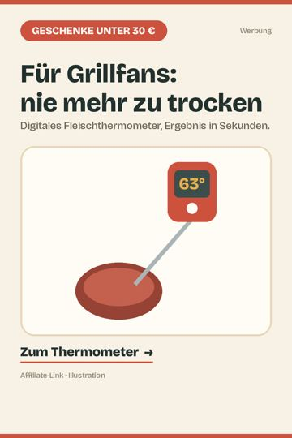
Für Grillfans: nie mehr zu trocken
Das perfekte Geschenk für alle, die grillen und Braten lieben: Das Fleischthermometer zeigt die Kerntemperatur in Sekunden, nie mehr zu trocken oder zu roh.
Bei Amazon ansehen *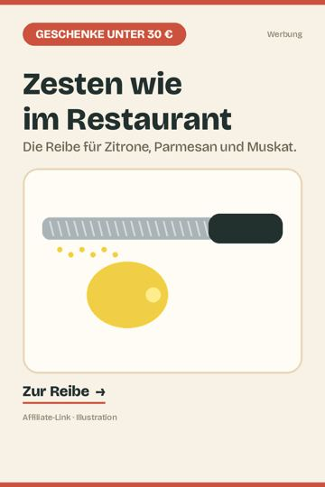
Zesten wie im Restaurant
Kleines Geschenk, großer Unterschied: Mit der feinen Reibe werden Zitronenschale, Parmesan, Ingwer und Muskat hauchdünn.
Bei Amazon ansehen *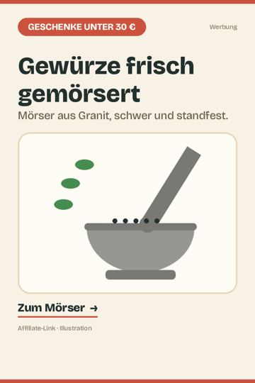
Gewürze frisch gemörsert
Frisch gemörserte Gewürze, Pesto und Currypaste: Der schwere Granit-Mörser steht fest und hält ein Leben lang.
Bei Amazon ansehen *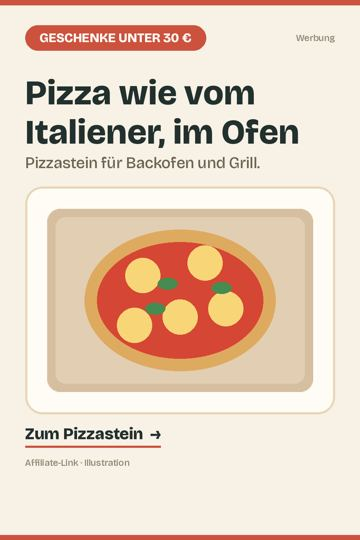
Pizza wie vom Italiener, im Ofen
Knuspriger Boden wie beim Italiener: Der Pizzastein speichert Hitze und macht aus dem normalen Backofen einen kleinen Pizzaofen.
Bei Amazon ansehen *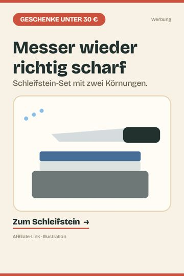
Messer wieder richtig scharf
Stumpfe Messer gehören der Vergangenheit an: Schleifstein-Set mit grober und feiner Körnung, ideal für alle, die gern schnippeln.
Bei Amazon ansehen *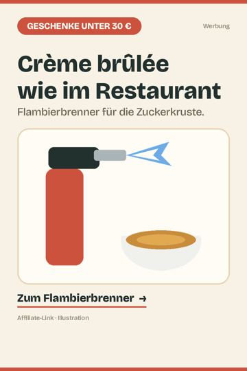
Crème brûlée wie im Restaurant
Knackige Zuckerkruste wie im Restaurant: Der Küchenbrenner flambiert Crème brûlée, Baiser und mehr.
Bei Amazon ansehen *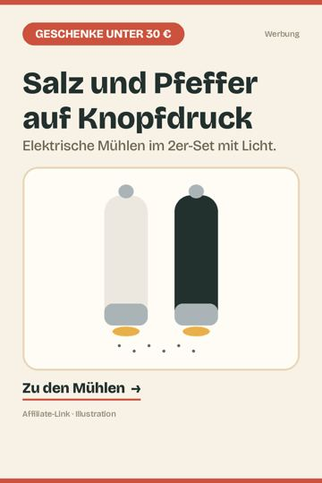
Salz und Pfeffer auf Knopfdruck
Würzen mit einer Hand: Die elektrischen Mühlen mahlen auf Knopfdruck und leuchten dabei, ein schönes Geschenk für jede Küche.
Bei Amazon ansehen *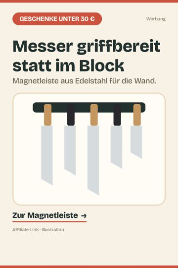
Messer griffbereit statt im Block
Messer griffbereit an der Wand statt im Block: Die Magnetleiste spart Platz und schont die Klingen.
Bei Amazon ansehen *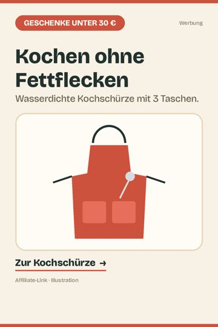
Kochen ohne Fettflecken
Kochen ohne Fettflecken: Wasserdichte Kochschürze mit drei Taschen, verstellbar für jede Größe.
Bei Amazon ansehen *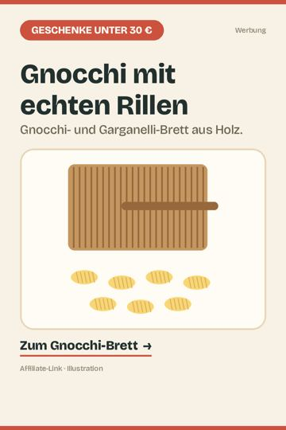
Gnocchi mit echten Rillen
Gnocchi mit echten Rillen, an denen die Soße hängen bleibt: Das Holzbrett aus Italien kostet wenig und macht viel Freude.
Bei Amazon ansehen *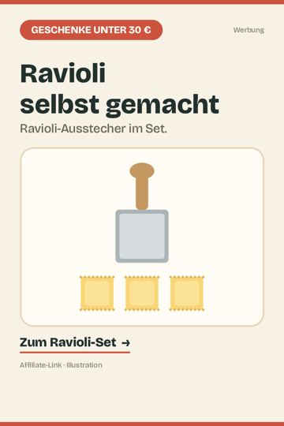
Ravioli selbst gemacht
Ravioli selbst machen: Mit dem Ausstecher-Set werden die Teigtaschen gleichmäßig und dicht.
Bei Amazon ansehen *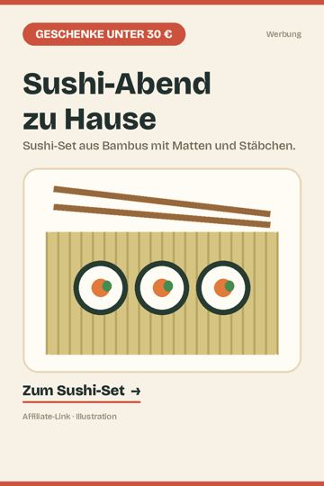
Sushi-Abend zu Hause
Sushi-Abend zu Hause: Bambusmatten, Reisspatel und Stäbchen im Set, perfekt zum Verschenken.
Bei Amazon ansehen *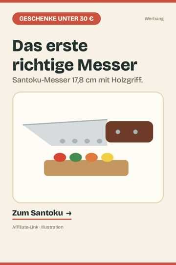
Das erste richtige Messer
Das erste richtig gute Messer: Santoku mit 17,8 cm Klinge und Holzgriff, für Gemüse, Fleisch und Kräuter.
Bei Amazon ansehen *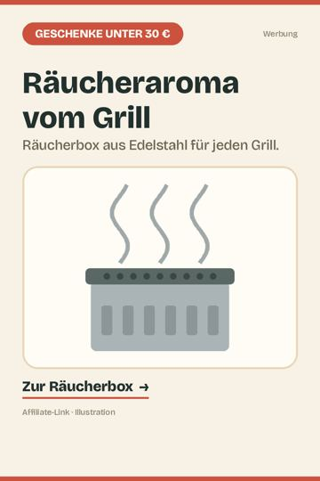
Räucheraroma vom Grill
Rauchiges Aroma vom Grill: Räucherchips in die Box, Box auf den Rost, fertig.
Bei Amazon ansehen *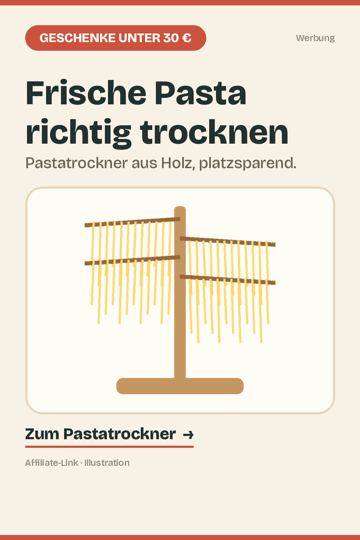
Frische Pasta richtig trocknen
Frische Pasta richtig trocknen: Der Pastatrockner aus Holz hält Tagliatelle und Spaghetti luftig und platzsparend.
Bei Amazon ansehen *